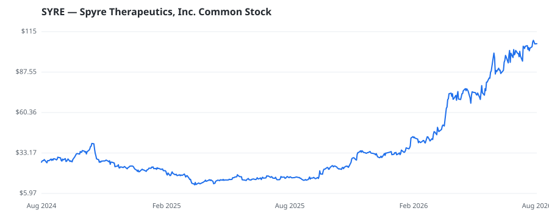

bullish · bearish · n/a — dots: price>SMA10 · SMA10>SMA50 · SMA50>SMA200 · up>down volume (20d)

This name produced 0.8% of the ranked funds’ total alpha.
| Fund | Fund alpha vs SPY | Position | % of book |
|---|---|---|---|
| Fairmount Funds Management LLC | +167% | $203M | 14.6% |
| Remedium Capital Partners, LLC | +128% | $73M | 26.1% |
Hedge data: SEC EDGAR 13F · ranked funds beat SPY in >50% of their quarters · fund alpha = mirror-portfolio return minus SPY.